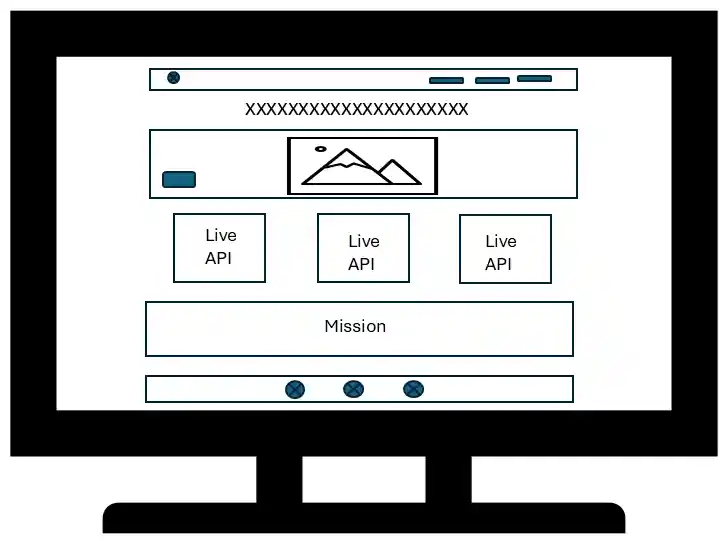
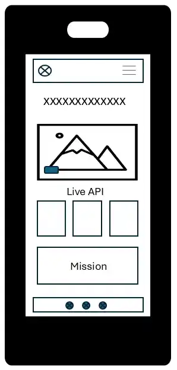

Logo & Name
Wild Brazil
The name alludes to Brazil's wildlife, captivating the world with colorful and iconic species being wild and exotic at the same time.
Logo: features the Brazilian flag with jaguar claw marks, revealing our forests—an aspect represented by the flag's green rectangle.
Site Purpose
To educate visitors on Brazil's exotic fauna, inspire active engagement in wildlife conservation and protection, and raise awareness to combat animal mistreatment and illegal trafficking.
Scenarios
- What are Brazil's most iconic species?
- Which animals are currently at risk of extinction?
- Are there official facts and studies available?
- Where do I report abuse or illegal wildlife trading?
Color Schema
Heading backgrounds, header text
Header, footer and modal backgrounds, main title and heading text
Buttons
Body text
Typography
Fraunces
Header, main title and headings
Brings a bold, organic warmth that reflects the natural wilderness and rich heritage of Brazil.
Plus Jakarta Sans
Body paragraph text and footer
Offers clean, modern legibility, ensuring conservation data and educational text are easy to read.
Taprom
Homepage main title: only site name
Wireframes
Desktop View

Mobile View
